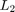

LPVSFSYN - Parameter-dependent state feedback controller synthesis
Contents
Syntax
[F,GAM,INFO] = lpvsfsyn(P,NCON) [F,GAM,INFO] = lpvsfsyn(P,NCON,'L2') [F,GAM,INFO] = lpvsfsyn(P,NCON,'LQG') [F,GAM,INFO] = lpvsfsyn(P,NCON,Xb,Yb) [F,GAM,INFO] = lpvsfsyn(P,NCON,Xb,Yb,'L2') [F,GAM,INFO] = lpvsfsyn(P,NCON,Xb,Yb,'LQG')
Description
[F,GAM,INFO] = lpvsfsyn(P,NCON,'L2') computes a parameter-varying state-feedback controller for the parameter-varying system P. NCON specifies the number of available control inputs in P. F is the state-feedback controller for the plant P, which minimizes the  norm from the input of P to its output. GAM is the minimum norm achived by F. INFO is a struct with additional data.
[F,GAM,INFO] = lpvsfsyn(P,NCON,'LQG') computes a parameter-varying state-feedback controller F, which minimizes the stochastic LPV bound. The stochastic LPV bound is defined as the expected value of the average instantaneous power of the output of P, assuming its inputs are zero mean, white-noise processes with unit intensity.
[F,GAM,INFO] = lpvsfsyn(P,NCON,Xb,Yb,ALG) performs a rate-bounded synthesis. Xb and Yb are basis objects specifying the basis functions to be used in the synthesis. ALG can be either 'L2' or 'LQG'. A call without the ALG argument is equivalent to [F,GAM,INFO] = lpvsfsyn(P,NCON,Xb,Yb,'L2').